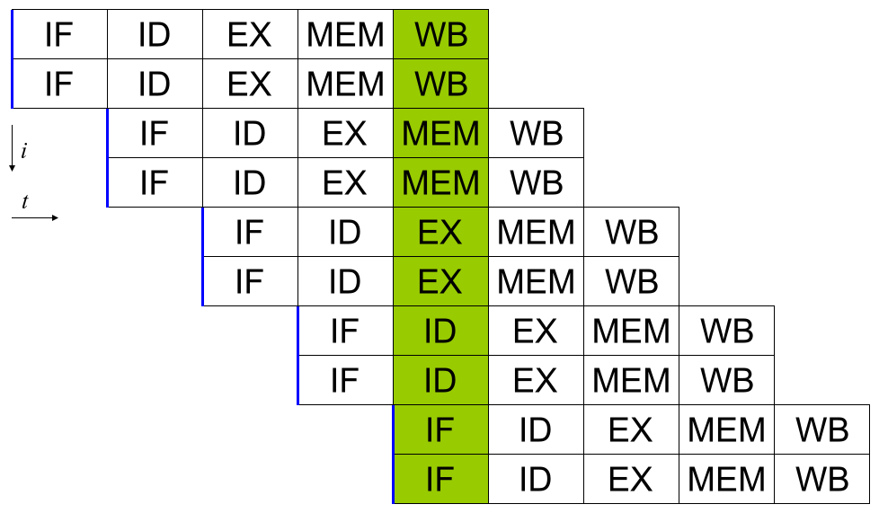

Ph.d Proposal
Curtis D'Alves
2019-08-08
Instruction Scheduling Intro
Instruction Scheduling
- Given a set of instructions and dependencies, designate an order (find a schedule) satisfying the dependencies and optimizing performance
- Known NP-Complete
Practically solved by
- Heuristics
- Approximation Algorithms
Types of Scheduling Algorithms
- Basic Block: break code into blocks within branches (most commonly performed scheduling)
- Global Scheduling: schedule across basic block boundaries
- Modulo Scheduling: schedules basic blocks inside of a loop, seeking to optimize by interleaving iterations
- Trace Scheduling: tries to optimize control flow by predicting routes taken on branches
Register Allocation
- Given a schedule, assign registers keeping in mind
- limited number of registers
- can't rewrite a register until consumed by dependent instructions
- Known NP-Complete
- Practically solved using non-optimal Graph Coloring algorithms
- done seperately from instruction scheduling (before or afterwords)
Graph Colouring
Find a k-Colouring for the dependency graph, where \(k = \#Registers\)
Spilling
- What if a k-Coloring can't be found? Must Spill memory
- Simply insert new Load / Store instructions as needed
- Potentially creates new stalls in the pipeline, need to re-perform scheduling
- May use up dispatch slots
- An Ideal Schedule has no spilling
Instruction Pipelining
Classic RISC Pipeline

Simple example pipeline with no stalls and a single instruction fetch per "cycle"
SuperScalar Pipelining

Superscalar architectures can fetch multiple instructions per "cycle" and require more thought about resource restriction (such as limits on ALU's)
Pipeline Stalls

An Ideal Schedule (like in the previous figures) contains NO stalls (often not possible)
Hazards
- Data Hazards
- read after write RAW
- write after read WAR
- write after write WAW)
- Structural Hazards occurs when an aspect of hardware is accessed at the same time
- Control Hazards caused by branching, next instruction unknown
Hardware encountering hazards causees stalls in the pipeline
Staging : Example 3 Staged Loop
When performing modulo scheduling, a basic block of a loop can be broken into stages and the loop can be unrolled to interleave stages between iterations
Iteration Interval
\[ \frac{\text{latency height}}{\# \text{stages}} \leq \textrm{II} \]
- the maximum number of cyles to complete a loop iteration
- exact number is complicated Out of Order Execution / Staging
Register Remapping
When executing machine code, hardware maps Logical Registers to Physical Registers
- Logical Registers are a set of registers usable directly when writing/generating assembly code (limited by system architecture)
- Physical Registers are a set of registers actually available in hardware
Having a larger number of Physical registers than Logical registers gives hardware extra flexibility when dispatching instructions for Out of Order Execution
Out-Of-Order Dispatcher Example
Previous Works
List Scheduling (most commonly performed scheduling)
Simple heuristic. Choose a prioritized topological order that
- Respects the edges in the data-dependence graph (topological)
- Heuristic choice among options, e.g pick first the node with the longest path extending from that node prioritized
Most commonly used method for scheduling. Efficient but yields far less than optimal schedules
Issues with List Scheduling
- Many factors to consider when constructing a schedule (everything listed in this presentation and more!)
- Difficult (or more accurately impossible!) to consider all these aspects into a single choice heuristic
- Combinations of heuristics can be used, and multiple iterations performed, but each will usually undo the work of the other
Previous Works Constraint Programming
Optimial Basic Block Instruction Scheduling With Constraint Programming
Malik,Mcinnesm,Beek (Waterloo,IBM). Found provably optimal schedules for basic blocks using constraint programming, using the following types of constraints
- Latency Constraints, i.e
- Given a labeled dependency DAG \(G = (N,E)\)
- \(\forall (i,j) \in E \cdot j \geq i + l(i,j)\)
- Given a labeled dependency DAG \(G = (N,E)\)
- Resource Constraints that ensured functinonal units were not exceded
- Distance Contstraints, i.e
- Given a labeled dependency DAG \(G = (N,E)\)
- \(\forall (i,j) \in E \cdot j \geq i + d(i,j)\)
- Given a labeled dependency DAG \(G = (N,E)\)
Optimial Basic Block Instruction Scheduling With Constraint Programming (Limitations)
The hard constraints on latency would not account for Register Remapping in Out Of Order Execution that would be able to find more optimal schedules despite the fact that latencies in normal execution would create pipeline stalls
fma r3,r3,r4 fma r2,r2,r4 fma r1,r1,r4 fma r0,r0,r4
On a system with only 5 registers and an instruction fma of large enough latency, the scheduler would push these instructions apart. However a machine could use register remapping to execute these instructions efficiently OoO making that constraint unnecessary
Previous Works Program Optimization Through Stochastic Search
Program Optimization through Stochastic Search
Eric Schkufza, Rahul Sharma, Alex Aiken Stanford University
- Suitable for Short Basic Block assembly code sequences
- Utilizes a multiple pass Stochastic Algorithm
- Encodes constraints as a Cost Function and uses a Markov Chain Monte Carlo Sampler to explore space of all possible schedules
Program Optimization through Stochastic Search
Each pass of the optimization minimizes the cost function
| \(\color{lightgreen}{\boldsymbol{R}}\) | any rewrite of the program |
| \(\color{lightgreen}{\boldsymbol{T}}\) | the input program sequence |
| \(\color{lightgreen}{eq(\cdot)}\) | the equivalence function (0 if \(\color{lightgreen}{R \equiv T}\) ) |
| \(\color{lightgreen}{perf(\cdot)}\) | a metric for performance |
| \(\color{lightgreen}{\boldsymbol{w_e}}\) | weight for the equivalence term |
| \(\color{lightgreen}{\boldsymbol{w_p}}\) | weight for the performance term |
Program Optimization through Stochastic Search (Limitations)
- Only optimizes basic blocks (no loops)
- Extremely innefficent (only practical for very short scheduling)
- Performed in multiple passes with model checking
- Cost function doesn't model the space of valid checking (hence model checking is required per each rewrite)
Proposed Research
Constrained Optimization Model For Modulo Scheduling
Constrained Optimization Model
Key Idea: Encode choice heuristics as penalties, adjust preference between heuristics by scaling
IO Penalty
- IDEA penalize dispatch time of instructions based on the quantity and latencies of it's dependencies
- Note This is a penalty not a hard constraint on latencies
Stochastic Scaling
- The scaling \(\color{lightgreen}{\frac{1}{N_j}}\) may be a good guess, but not necessarily effective in practice
- IDEA scale the IO penalty stochastically
Schedule Topology
Assertion For each scaling \(\color{lightgreen}{c_i \in \mathbb{RAND(R)}}\), there exists an \(\color{lightgreen}{\epsilon \in \mathbb(R)}\) such that \(\color{lightgreen}{c_i + \epsilon}\) produces a distinct schedule from \(\color{lightgreen}{c_i}\)
- If the assertion fails, the clustering is useless (possible to avoid such clusterings?)
- What does this topology look like?
- Do all valid schedules span this topology?
Topology Analysis
- TODO prove stochastic scaling of spans the topology of all schedules